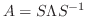
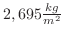
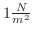
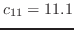
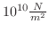
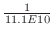
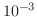

Next: Vibration Sensors that Require Up: Tamara Smyth Previous: Tamara Smyth
Furthermore, the excursions of the kinematic variables in a solid as a result of vibratory stress can be quite small. The precise relationship between these variables depends primarily on the material's elasticity constants, , which are sensitive to the directionality and polarization of the vibratory motion, relative to the particles in the solid. See section 1.1 for an introductory look at this formalization.
For example, given equation (1.1.7), we can calculate the ratio of the inter-particulate equilibrium length to the length under unit normal stress of a piece of polycrystalline aluminum with a density of . This value will be the amount of compression observed as the result of . Substituting in the value of , with units of ,[3, p. 12] we find the material will deviate on the order of  from its original position. Given the boundary conditions for a free surface (see section 1.2), we conclude that the stress compression wave traveling through this material will be zero at the surface and the kinematic waves will be at a maximum magnitude.
Another rule of thumb to derive the orders of magnitude entailed by structure-borne sound is the maximal strain a given material can withstand before fracture. In the orders of magnitude near this limit, the constitutive relation equation (1.1.7) no longer holds, and becomes nonlinear. For most materials, the strains in the nonlinear region between fracture and Hookean linearity are on the order of  to . [3, p. 16]
As should be clear from these back-of-the-envelope calculations, the direct observation of vibration in a solid is generally restricted to those in the possession of a microscope. However, many individuals have devised methods for indirectly observing such phenomena. A famous example occurred in 1787, in Wittenberg, Germany, where a 31 year-old Ernst Chladni first published the results of an experiment which would captivate the imaginations of scientists and laypeople alike.[30] [32] His experiment, which will be discussed in greater depth in section  of this document, consisted of sprinkling a fine powder over the surface of an object, and setting it into vibration using a violin bow. The particles collected along the nodal lines, where the incident kinematic waves were at a minimum amplitude. The dynamic shapes and synesthetic correspondence between sight and sound helped to canonize acoustics as a legitimate scientific discipline.
of this document, consisted of sprinkling a fine powder over the surface of an object, and setting it into vibration using a violin bow. The particles collected along the nodal lines, where the incident kinematic waves were at a minimum amplitude. The dynamic shapes and synesthetic correspondence between sight and sound helped to canonize acoustics as a legitimate scientific discipline.
The techniques discussed in pages that follow will be assessed according to a number of attributes: cost, field-readiness, quality, generality, and impedance. In this context, cost refers to economic cost--measured in dollars, not flops. Field-readiness is actually a cluster of concerns including mechanical robustness, portability, and ease of calibration. These considerations may take on a variety of forms, depending on the technique: for example tube lasers are not very field-ready because of their high power drain. The term quality refers to the information content of the measurements, meaning linearity (or linearizability), signal-to-noise ratio (SNR), gain-bandwidth-product (GBP), and sensitivity. Generality means we ask ``what can it measure?'' For example, a technique which measures perturbations in the magnetic field would be difficult to apply to the general case. Finally, impedance refers not to electrical impedance--as any modern sensor can be trivially impedance-matched with proper gain-staging--but rather mechanical impedance, as explored in section 1.4. Sometimes, despite our best efforts, these considerations will become interdependent. This is the nature of considerations.
joe 2014-01-09